Release Management¶
Introduction¶
This section outlines how to use the Release Management features of SpiraPlan® to manage different versions of the system being tested in a particular product. This is an optional feature of the system, and you can manage the testing for a product successfully without tracking individual releases. Typically, when you develop a system, it is important to ensure that features introduced in successive versions do not impair existing functionality - this is known as regression testing.
In such situations, you will want to be able to execute the same set of test scripts against multiple versions of the system and be able to track failures by version. A feature that works correctly in version 1.0 may fail in version 1.1, and the maintenance team may be testing the existing lifecycle of v1.0 in parallel with the development team testing v1.1. Therefore, by developing a master set of releases/versions in the Release Management module, you can have the different testing teams correctly assign their testing actions to the appropriate version.
There are two types of release artifact in SpiraPlan® - product releases that are displayed with the release icon and represent major or minor versions of the system, and release Sprints that are displayed with the sprint icon. Note: Sprints can be contained within a Release, but not the other way round.
The main differences between releases and sprints are as follows:
- Releases are independent versions of the system being tested and as such, you can map a requirement directly to a release, indicating the release of the system that the requirement will be fulfilled in.
- When you report on a release (e.g. on the product home or in one of the reports) any child sprints are automatically taken into account, and test runs and incidents that are related to the child sprints will get included in the release reports. Child releases on the other hand are not aggregated up into the parent release (in particular a major release never rolls up to a parent major release).
Release Traceability and Coverage¶
From the release list page you can see a number of columns that show calculated data for each release, based off:
- rolling up of information from child to parent (as mentioned above)
- associations between the release and other artifacts (such as requirements, tasks, incidents, and test cases)
This allows you to see at a glance the state of play about a number of key metrics for the release.
Requirements Completion¶
This column shows a mini chart that shows the percentage completion of all relevant requirements assigned to the release (or that are rolling up from the releases children).
The percentaged complete is worked out by dividing the number of "completed requirements" (described below) by the total number of requirements assigned to the release. A "completed requirement" is a requirement with a status of either "Tested", "Completed", or "Released".
Requirement Count and Points¶
These columns (not shown by default) show you the sum of all requirements assigned to the release; and the sum of all the points scored to all those requirements respectively.
Test coverage¶
This column shows a mini chart that shows the sum of each execution statuses against the release. It is calculated from the latest test run executed against that release for each test case that is assigned to that release. If you execute a test case against a release, and that test case is not by itself assigned to the release, the information for that test run will not be included.
If you hover the mouse over the mini chart it will display a tooltip that provides a more detailed description of the number of tests in each execution status.
Each release shows the overall execution status of test cases assigned to that release for that release. For each test case the execution status shown is the most recent result from when that test case was run against that particular release (if at all). Note: a major release will also show the results from test cases assigned to it directly that are also assigned to and run against its child sprints.
Task Progress¶
This columns shows a mini chart of the count of all active tasks1 assigned to the release, by progress category for the release. The 'On Schedule', 'Late Finish', 'Late Start' and 'Not Started' bars indicate the total count of tasks that are in that category.
If you hover the mouse over the mini chart it will display a tooltip that provides a more detailed description of the number of tasks in each category.
How are the different categories calculated?
- Inactive tasks are completely excluded
- Each task assigned to the release has a count of 1.
- Counts in each category are added together and percentages taken based off those final counts
- Counts for tasks that are either "Running Late" or "On Schedule" are split based off their percentage completion (the done portion adding to the specific category and the remainder adding to the "Not Started" category). So if a task is 40% done it will add 0.4 to, for example, "Running Late" and 0.6 to "Not Started".
- On Schedule tasks:
- have some work completed on them (percentage complete is more than 0 but is not 100%)
- are not overdue (their end date is not in the future)
- Running Late tasks:
- are overdue (i.e. with an end date in the past)
- either have a status of "In Progress" or have been partially completed (have a completion of more than 0%)
- have not been fully completed (their completion is not at 100%)
- Starting Late tasks:
- have not had any work done on them (percentage complete is 0)
- have already started (their start date is in the past)
- Not Started tasks:
- have not had any work done on them (percentage complete is 0)
- have not yet started: this is the case if either their start date is in the future or they have a status of "Deferred"
Task Effort¶
Rollup of effort from requirements associated to the release are summed together in the relevant release effort fields. Other artifacts's effort values can also be included in these calculations, controlled on the Planning Options page of product administration.
Task effort calculations are described in more detail here.
Baselining¶
NOTE: Baselining is only available in SpiraTeam and SpiraPlan.
What is baselining in SpiraPlan
Baselining allows you to take a snapshot of the entire product at a specific point in time. You can use this feature to see the state of every test case, requirement, and incident as they were the moment that baseline was created. You can see how an artifact changed between 2 baselines (or between the baseline and when the product was first created if you are looking at the earliest baseline).
In SpiraPlan, we attach baselines to a release, as well as to the state of the product changes. This is to help you more easily use baselines as part of your release planning and review: baselines are, in effect, tied to the progress of your releases and sprints. You may wish to create a baseline when your release starts, and then create another when it is released. You may create a baseline at the end of every sprint and then use your baselines to see what happened between those two sprints.
Once a product has baselines, product owners can explore each baseline to see what artifacts were added, changed, or deleted in a baseline.
Here is a step by step overview on getting started with baselines:
- First, enable baselining for your specific product via the edit product page. You have to a system or product admin to do this
- To make sure you cannot accidentally change anything that has already been baselined, when baselining is enabled, product admins will not be able to revert or purge any history items
- With baselining turned on you can create, edit, and delete baselines against any release in the product. The permissions for this are based off your release permissions. If you can view releases, you can view any baselines against that release. If you can create releases, you can create baselines. If you can edit a release you can edit its baselines. And if you can delete releases you can delete baselines.
- Go to the list of releases and click on the release you want to manage baselines for
- Click on the baselines tab to see your list of baselines
- You can sort or filter the list of baselines by any of the fields in the table
- To add a baseline, click the add button and fill in the details on the popup form
- To do more with baselines you can create a custom report for them (examples here).
Below is more information below about how to create, edit, delete, and view your baselines against a specific release.
Product admins / product owners can use the dedicated admin list page to see all baselines across all releases in a product. They can also explore a baseline in detail, to see all the artifacts changed, added, or deleed in a baseline.
What is captured when baselining is turned on? Baselining leverages the change tracking tools built into SpiraPlan already. It does this by using the history stored against each artifact in the product to track what has changed between any two baselines. Some additional information is captured only when baselining is turned on (both for baselining use and general history tracking):
- Reordering of test steps (shown as history changes to the test case)
- Reordering of use case steps (shown as history changes to the use case)
- Reordering of risk mitigations (shown as history changes to the risk)
- Changes to test coverage on requirements (shown as history changes to the requirement)
- Changes to test coverage on releases (shown as history changes to the release)
Release List¶
When you click on the Planning > Releases global navigation link, you will initially be taken to the release list screen illustrated below:
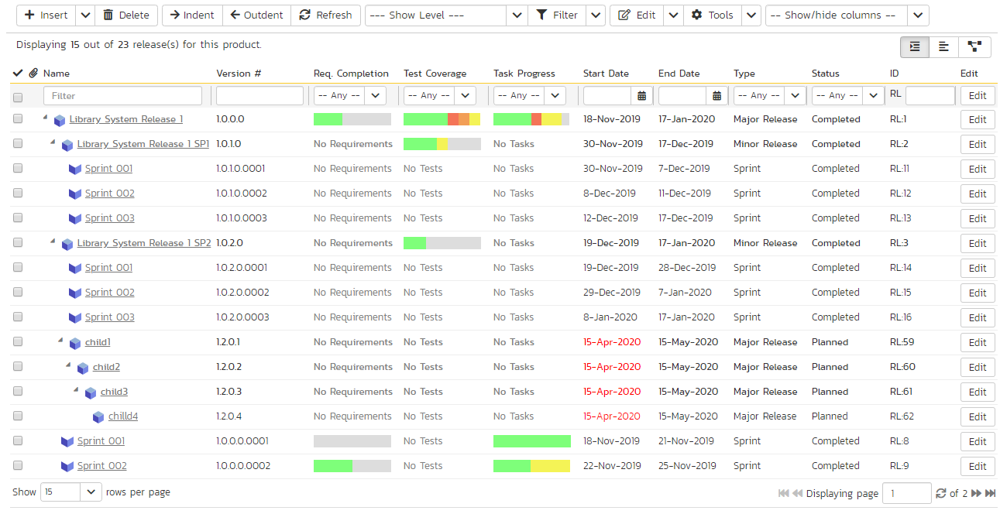
The release list will contain all the releases and sprints associated with current product. When you create a new product, this list will initially be empty, and you will have to use the "Insert" button to start adding releases and sprints to the product. The hierarchical organization of releases in the list is configurable, so you can organize the various releases in the way that makes most sense for a particular product. Typically you have the major releases as the top-level items, with sub-releases, builds and sprints as the lower-level items.
All of the releases in the list have a release-name, together with the assigned version number for that release, the start-date and end-date for the release, the number of estimated product personnel working on that release, the planned effort for the release, the total effort currently scheduled (as tasks), the available effort for new tasking, the release id, the type of each release, its status, and a set of custom properties defined by the product owner.
For those releases that have test cases mapped against them, the execution status of the various test cases associated with the release is displayed in aggregate for each item as a graphical bar diagram. If you position the mouse over the execution status indicator you will see the detailed execution information displayed as a tooltip.
For those releases that have at least one requirement task associated with them, they will display a block graph that illustrates the relative numbers of task that are on-schedule (green), late-starting (yellow), late-finishing (red) or just not-started (grey). These values are weighted by the effort of the task, so that larger, more complex tasks will be change the graph more than the smaller tasks. To determine the exact task progress information, position the mouse pointer over the bar-chart and the number of associated tasks, along with the details of how many are in each status will be displayed as a "tooltip".
Clicking on a release's hyperlink will take you to the release details page for the item in question.
Filtering¶
Read about how to create and manage filters.
Insert¶
The "Insert" button has an attached dropdown menu that lets you:
- insert a release (this is the default if you click the main "Insert" button)
- insert a child release
- insert a sprint
- insert a child sprint
If you insert a release or sprint (not as a child) the new item is inserted above the currently selected item -- i.e. at the same level in the hierarchy but visually above the release with the checked checkbox. If you insert an item with no release selected, the item is inserted at the bottom of the list (at the same level in the hierarchy as the item release or sprint that was previously at the bottom).
If you insert a child release or sprint, the new item is inserted below the currently selected item - i.e. nested insde the selected release as a child (a sprint cannot have child sprints or releases).
Once the new release has been inserted, the item is switched to "Edit" mode so you can change its name, version number or other information.
Delete¶
Clicking on the "Delete" button deletes all the releases whose check-boxes have been selected. If any of the releases have child releases/sprint, then the child releases and sprints are also deleted.
Indent¶
Clicking on the "Indent" button indents all the releases whose check-boxes have been selected. Note: you cannot indent a release or sprint if it is below a sprint, as sprints are not allowed to have child items.
Outdent¶
Clicking on the "Outdent" button de-indents all the releases whose check-boxes have been selected.
Refresh¶
Clicking on the "Refresh" button simply reloads the release list. This is useful as other people may be modifying the list of releases at the same time as you, and after stepping away from the computer for a short-time, you should click this button to make sure you are viewing the most current release list for the product.
Edit¶
Each release/sprint in the list has an "Edit" button display in its right-most column. When you click this button or click on any of the cells in the row, you change the item from "View" mode to "Edit" mode. The various columns are made editable, and "Save" buttons are displayed in the last column:
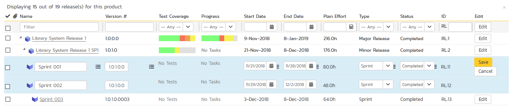
If you click "Edit" on more than one row, the "Save" buttons are only displayed on the first row, and you can make changes to all the editable rows and then update the changes by clicking the one "Save" button. Also, if you want to make the same change to multiple rows (e.g. to change five releases from "active" to "inactive"), you can click on the "fill" icon to the right of the editable item, which will propagate the new value to all editable items in the same column.
If you want to edit lots of items, first select their checkboxes and then click the "Edit" button on the same row as the Filters and it will switch all the selected items into edit mode.
When you have made your updates, you can either click "Save" to commit the changes, or "Cancel" to revert back to the original information. Alternatively, pressing the <ENTER> key will commit the changes and pressing the <ESCAPE> key will cancel the changes.
Show Level¶
Choosing an indent level from the 'Show Level' drop down box allows you to quickly and easily view the entire release list at a specific indent level. For example you may want to see all releases drilled-down to the third level of detail. To do this you would simply choose 'Level 3' from the list, and the releases will be expanded / collapsed accordingly.
Show / Hide Columns¶
This drop-down list allows you to change the fields that are displayed in the release list as columns for the current product. To show a column that is not already displayed, simply select that column from the list of "Show..." column names and to hide an existing column, simply select that column from the list of "Hide..." column names. This is stored on a per-product basis, so you can have different display settings for each product that you are a member of. The fields can be any of the built-in fields or any of the custom properties set up by the product owner.
Copying Releases/Sprints¶
To copy a release/sprint or set of releases/sprints, simply select the check-boxes of the release/sprint you want to copy and then select the Edit > Copy Items menu option. This will copy the current release/sprint selection to the clipboard. Then you should select the place where you want the releases/sprints to be inserted and choose the Edit > Paste Items option.
The releases/sprints will now be copied into the destination location you specified. The name of the copied releases/sprints will be prefixed with "Copy of..." to distinguish them from the originals. Note that copied releases/sprints will also include the test mapping information from the originals.
Copying parent and child releases together
If you want to copy a parent release and its children only select the parent release. You do not need to also select each of its child releases.
Cloning Releases/Sprints¶
To clone a release/sprint or set of releases/sprints, open particular release and select "Clone" from the New menu option. Please note that if you're cloning from the child release details page then only child release will be cloned. If you're cloning the parent release then all the children releases is getting cloned as well.
When cloning (or copying) a release note that:
- all standard fields (like type, status and owner) and custom fields are cloned
- description (with formatting) is cloned
- file attachments are cloned
- associated test cases are cloned
- associated incidents, requirements and tasks are not cloned
- followers, comments, and history are not cloned
Moving Releases/Sprints¶
To move a release/sprint in the hierarchy, there are two options:
-
Click on the release/sprint you want to move and drag the icon to the location you want it moved. An empty space will appear to show you where it will be inserted. Once you have the requirement positioned at the correct place that you want it inserted, just release the mouse button. To move multiple items simply select their checkboxes and then drag-and-drop one of the selected items
-
Alternatively you can simply select the check-boxes of the release/sprint you want to move and then select the Edit > Cut Items menu option. This will cut the current release/sprint selection to the clipboard. Then you should select the place where you want the release/sprint to be inserted and choose the Edit > Paste Items option. The release/sprint will now be moved into the destination location you specified.
Exporting Releases/Sprints¶
Read about how to export artifacts from one product to another.
Creating Test Sets from Releases¶
As a shortcut you can click the Tools > Create Test Set option to create a new test set for each of selected releases. The created test sets will include all of the test cases associated with a release. This is useful in regression testing when you have created a new release and want to be able to quickly assign a tester to ensure that all the functionality in the release works as expected.
Printing or Saving Items¶
To quickly print a single release/sprint or list of releases/sprints you can select the items' checkboxes and then click Tools > Print Items. This will display a popup window containing a printable version of the selected items. You can also save the report in a variety of common formats from the same Tools menu.
Right-Click Context Menu¶
SpiraPlan® provides a shortcut -- called the context menu - for accessing some of the most commonly used functions, so that you don't need to move your mouse up to the toolbar each time. To access the context menu, right-click on any of the rows in the release list and the following menu will be displayed:
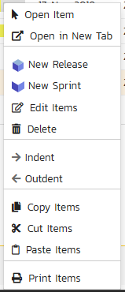
You can now choose any of these options as an alternative to using the icons in the toolbar
Releases Additional List Views¶
In SpiraTeam and SpiraPlan, there are two additional release list views. These views are:
- Gantt chart view (beta)
- Hierarchical Pert chart / Mind Map (beta)
You can pick between each of these views using the view selection button group at the top right of any requirement list page.
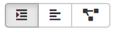
Release Gantt Chart¶
This displays all active releases and sprints2 nested in the same hierarchy as on the main release list page. Any release that has active children has an expand / collapse toggle to the left of its name. To the right of the release names is the timeline bar, which graphically shows the length of each release between their start and end dates in individual horizontal bars.
Part of a release may be shaded darker than normal, from its left (see Library System Release 1.1 below). This represents the requirements completion percentage for that release. So if a release bar stretches for 3 months and 33% of its requirements are complete, the first month of the bar will be shaded darker.
The names of the releases on the left or in the horizontal bar are clickable and will open the specific release.
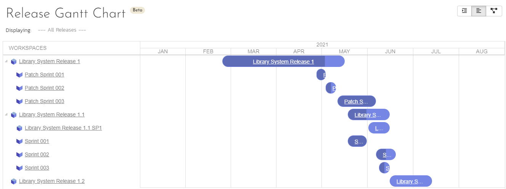
Above the Gantt chart is a toolbar that lets you:
- refresh the Gantt chart
- add a new release or sprint: users with permissions to create releases can click the
Addbutton to add a new release (or open the dropdown to add a new sprint or phase). Once you clickAddyou will have a popup to fill in information about the new release and then clickAdd Release. Adding the release inserts it at the bottom of the release hierarchy at the same indent level as the previous last release in the hierarchy. - filter the releases shown: use the dropdown to pick a release. This shows a list of all active releases2 and syncs up with the release you set in other parts of the system (for instance on the product home page, or the reporting home page).
Gantt Chart Inline Editing¶
To view more information about a release, click its name from the left hand sidebar or in the relevant Gantt bar. This will open popup with much more detail. If you ctrl/cmd+click on the release name it will open the full details page for that artifact. Information shown in the popup includes all standard and custom fields. These fields are visible or hidden based on the workflow step that applies to that specific release.
You can edit releases straight from the Gantt chart. Users with bulk edit permissions can edit a release (including adding a new comment) at any time by clicking on the release name. This opens a popup with full information about that release. At all times, which fields are shown, required, or hidden is based on the workflow step that applies to that specific release. To save any changes you must fill in all required fields. Please note: you cannot change the status in this edit mode, to do so open the artifact's detail page (you can do this from the popup by clicking the button next to the artifact's id at the top).
Note: only fields that users are able to edit are shown - fields that are always read only (like the creation date) are not shown in this view.
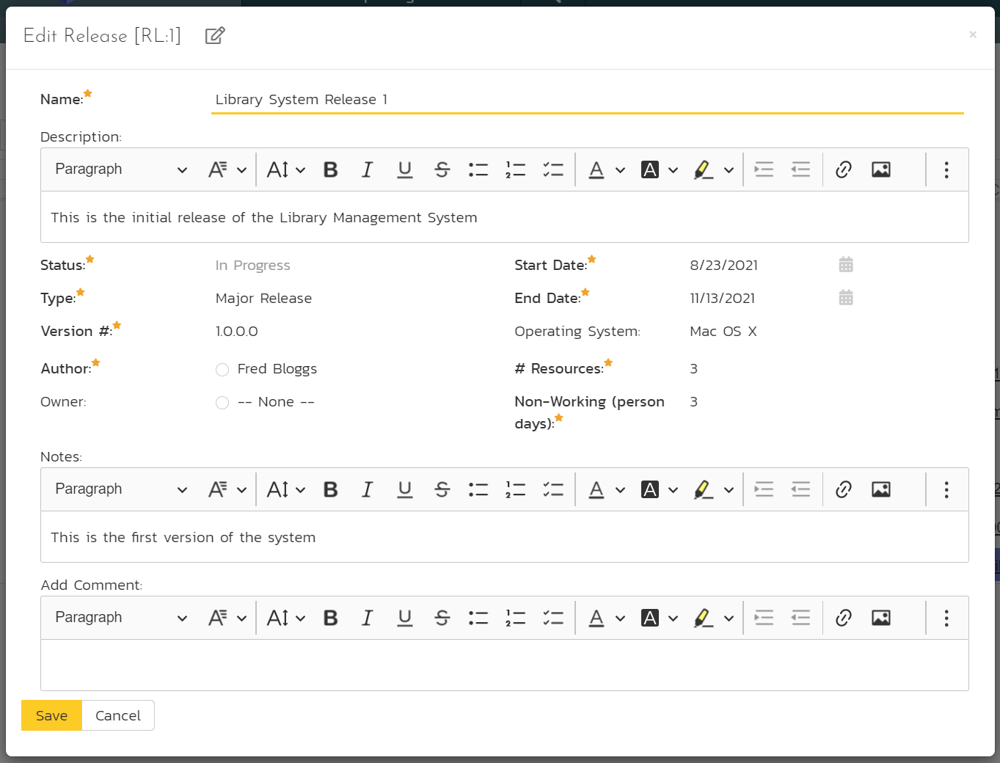
Releases Mind Map¶
The releases Mind Map / Pert chart displays the first 5,000 releases in the release hierarchy of the product as a connected tree view / mindmap. The root node shows the name of the product at the top. The top most level nodes are connected underneath this, with their successive children shown from top to bottom.
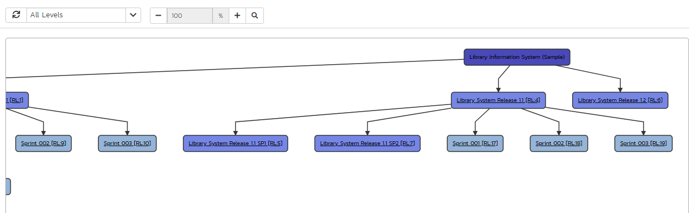
For each release the map displays the name and ID of the release, with a tooltip that additionally shows the release's version number. Each node is color coded by the release type: product is the darkest; major and minor releases are less dark; sprints and phases are the lightest.
Clicking on the node will take you to the details page for that release.
There are several other display options:
- refresh: to redraw the mindmap
- levels dropdown: lets you select how deep into the mindmap you wish to view. To only show the topmost level releases, select level 1; to select the top two levels, select level 2, or view everything by selecting "all levels"
- zoom: you can change the zoom between 25% and 100% using the plus and minus buttons. To reset the zoom, click the magnifying glass
Mindmap Inline Editing¶
To view more information about a release, click its name. This will open popup with much more detail. If you ctrl/cmd+click on the release name it will open the full details page for that artifact. Information shown in the popup includes all standard and custom fields. These fields are visible or hidden based on the workflow step that applies to that specific release.
You can edit releases straight from the mindmap. Users with bulk edit permissions can edit a release (including adding a new comment) at any time by clicking on the release name. This opens a popup with full information about that release. At all times, which fields are shown, required, or hidden is based on the workflow step that applies to that specific release. To save any changes you must fill in all required fields. Please note: you cannot change the status in this edit mode, to do so open the artifact's detail page (you can do this from the popup by clicking the button next to the artifact's id at the top).
Note: only fields that users are able to edit are shown - fields that are always read only (like the creation date) are not shown in this view.
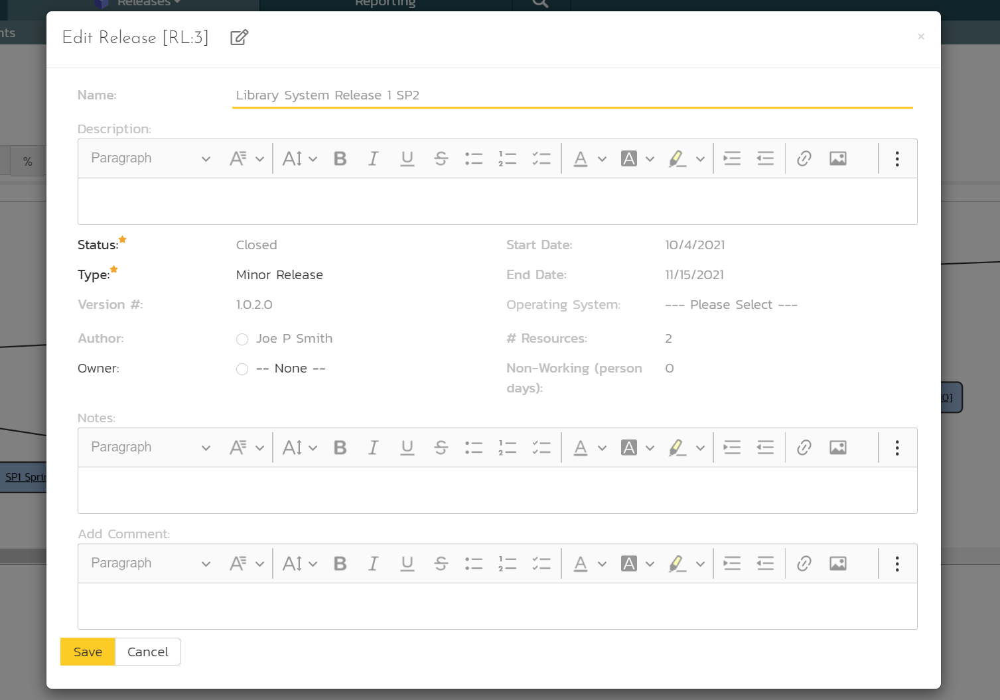
Release Details¶
When you click on release item in the release list, you are taken to the release details page illustrated below:
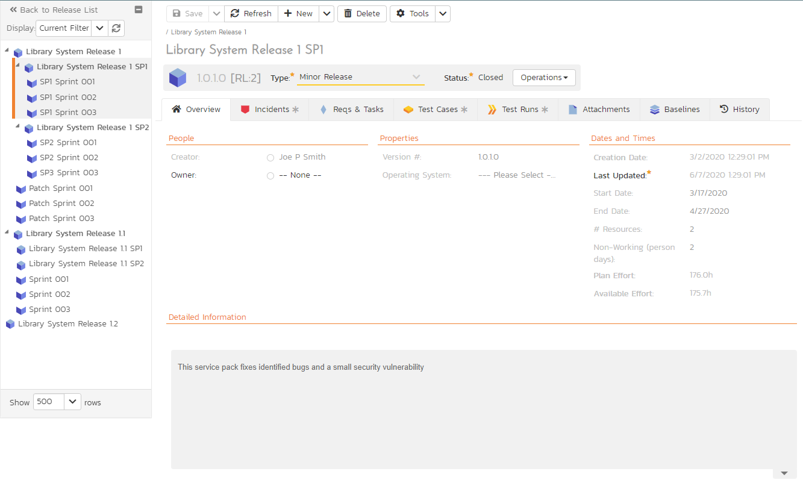
This page is made up of three areas;
- the left pane displays the releases list navigation;
- the right pane's header, which displays: the operations toolbar; the hierarchical structure the release is in; the editable name of the selected release; and the info bar (with a shaded background), which also contains the workflow status transitions (see below); and
- the right pane's tabbed interface with rich information related to the release.
Please note that on smaller screen sizes the navigation pane is not displayed. While the navigation pane has a link to take you back to the releases list, on mobile devices a 'back' button is shown on the left of the operations toolbar.
The navigation pane can be collapsed by clicking on the "-" button, or expanded by clicking anywhere on the gray title area. On desktops the user can also control the exact width of the navigation pane by dragging and dropping a red handle that appears on hovering at the rightmost edge of the navigation pane.
The navigation pane consists of a link that will take you back to the release list, as well as a list of the other releases in the current product. This latter list is useful as a navigation shortcut; you can quickly view the test run information of all the other releases by clicking on the navigation links without having to first return to the release list page. The navigation list can be switched between two different modes:
- The list of releases matching the current filter
- The list of all releases, irrespective of the current filter
The top part of the right pane allows you to view and/or edit the details of the particular release. In addition you can delete the current artifact by choosing "Delete", discard any changes made by clicking "Refresh", or print or export it by clicking one of the options from the Tools dropdown menu.
The lower part of the right pane can be in one of seven possible modes that can be selected: "Overview", "Incidents", "Reqs & Tasks", "Test Cases", "Test Runs", "Attachments", and "History". Each of the different views is described separately below.
Emailing¶
Read about emailing an artifact to colleagues using Spira.
Followers¶
Read about how to add and manage followers to an artifact.
Workflows and Statuses¶
Releases can have the following statuses: planned, in progress, completed, closed, deferred, and cancelled. Note that releases marked as closed, deferred, or cancelled cannot be associated with other artifacts -- for example an incident's planned release cannot be a cancelled release.
Read about using workflows to change the status of your artifact.
Overview -- Details¶
The Overview tab is divided into a number of different sections. Each of these can be collapsed or expanded by clicking on the title of that section. It displays the description, fields and comments associated with the requirement.
The top part of this tab displays the various standard fields and custom properties associated with the requirement. Fields (both standard and custom) are grouped under the collapsible headings (marked by orange text and underline) in the screenshot below. For instance, all fields regarding dates are grouped together in the "Dates and Times" area.
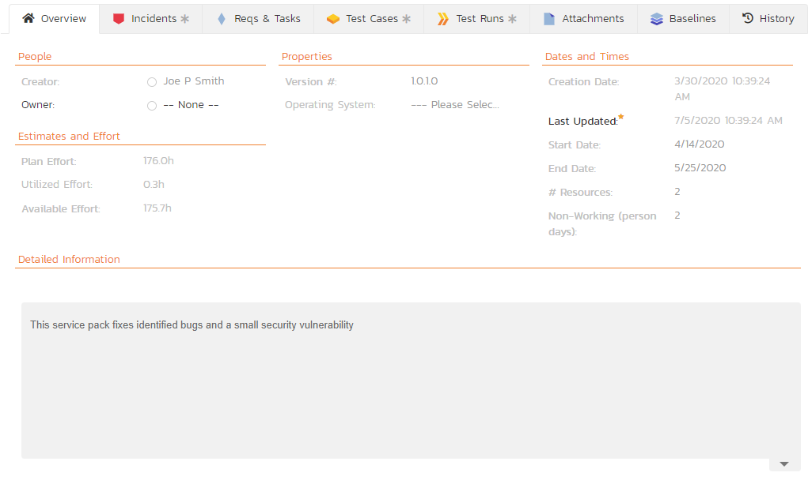
When you make changes to the release/sprint's start-date, end-date, number of product personnel resources, or number of non-working person days, the system will automatically calculate how many hours of effort (planned effort) are available in the release/sprint for assigning tasks. As you begin assigning tasks -- either through the Tasks tab or the Sprint Planning screen -- the total estimated effort of the tasks is subtracted from this planned effort to give the "available effort".
Overview -- Detailed Information¶
The Detailed Information section contains the long, formatted description of the requirement, as well as any rich text custom fields. You can enter rich text or paste in from a word processing program or web page into these fields. Clicking on the shaded areas of one of these detailed fields will display the rich text toolbar.
Overview - Comments¶
Read about how the comments works
Overview - Builds¶
This section displays the list of builds associated with the current release/sprint. Each build is listed together with its name, creation date, status (whether the build succeeded or failed), and last updated date. Clicking on the hyperlink for the build name will open up the Build Details page.

You can also filter the results by choosing items from the filter options displayed in the sub-header row of each field and clicking the "Apply Filter" button. In addition, you can quickly sort the list by clicking on one of the directional arrow icons displayed in the header row of the appropriate field.
Incidents¶
This tab displays the incidents associated with the selected release. The incident list can be one of three modes:
Detected in this Release -- this will display a list of all the incidents that were detected during the testing of the selected release. This is useful in determining if there are open incidents associated with a release that need to be dealt with.
Resolved in this Release -- This will display a list of all the incidents that have been reportedly resolved in this release. This is useful for double-checking that all the resolved incidents for a release have indeed been fixed.
Verified in this Release -- This will display a list of the incidents that have been verified as being fixed in this release. This is useful for generating release notes for a specific release indicating what changes and enhancements have been made in the release.
Regardless of the mode, each incident is listed together with the type, status, priority, name, owner, detector, detection date and a link to the actual incident details:

To change between the three modes outlined above, select the desired mode from the drop-down list contained within the header of the incident list table.
You can perform the following actions:
Refresh -- updates the list of incidents from the server, useful if other people are adding incidents to this release at the same time.
You can filter the results by choosing items from the filter options displayed in the sub-header row of each field and clicking the "Filter" button. In addition, you can quickly sort the list by clicking on one of the directional arrow icons displayed in the header row of the appropriate field.
Edit -- Clicking the "Edit" button to the right of the incident allows you to edit the incident inline directly on this screen. This functionality is limited to product owners.
Show/Hide Columns -- Allows you to choose which incident columns are visible
Reqs & Tasks¶
This tab displays the list of requirements (excluding parent requirements - in other words it displays 'user stories') and their associated child tasks that need to be completed for the release/sprint to be completed:
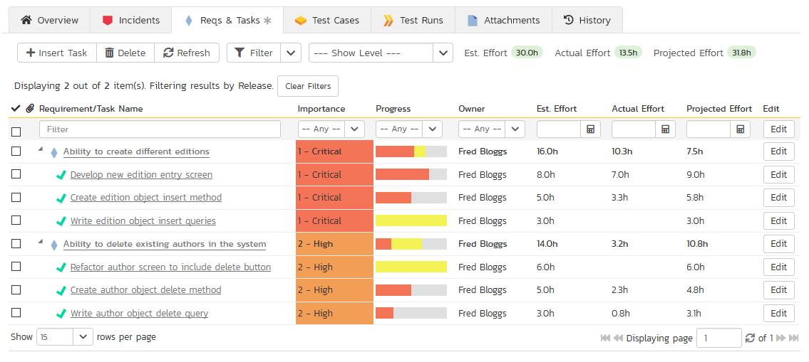
Each of the requirements and associated tasks is displayed together with its:
- name
- description (by hovering the mouse over the name)
- priority
- progress indicator
- current owner
- estimated effort
- actual effort
- projected effort
- story points (requirements only)
- and numeric task identifier
Clicking on a requirement will bring up the requirement details page. Clicking the triangle by a requirement will expand/collapse its list of tasks. Clicking on a task name will bring up the Task Details page which is described in more detail in Task Tracking > Task Details. This allows you to edit the details of an existing task.
You can perform the following actions on a task from this screen:
- Insert Task: inserts a new task in the task list under the specified requirement, with a default set of values. The task will be associated with the specified requirement and current release/sprint. If no requirement is selected, the task will only be associated with the current release/sprint
- Delete: deletes the task from the product.
- Refresh: updates the list of requirements and tasks from the server, useful if other people are adding requirements and/or tasks to this release/sprint at the same time.
- You can filter the results by choosing items from the filter options displayed in the sub-header row of each field and clicking the "Filter" button. In addition, you can quickly sort the list by clicking on one of the directional arrow icons displayed in the header row of the appropriate field.
- Edit: Clicking the "Edit" button to the right of the requirement or task allows you to edit the item inline directly on this screen. Only columns visible will be editable and task status cannot be edited.
- Show Level: Allows you to quickly expand/collapse all the requirements in the list.
Test Cases¶
This tab shows the test coverage information for the release in question:
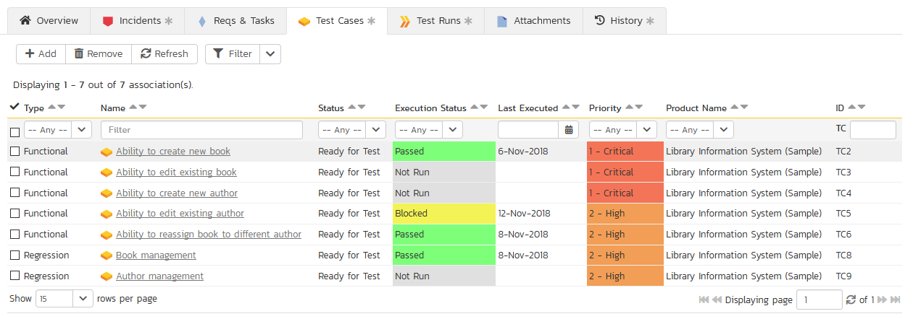
The tab displays a grid containing the test cases already mapped to this release. You can filter that list by the test case type, name, status, execution status, execution date, priority, product name and ID. You can remove an existing test case by selecting its check box and clicking the 'Delete' button. This doesn't delete the test case, just removes it from the release.
Hovering the mouse over the names of the test cases will display a "tooltip" consisting of the test case name, place in the folder structure and a detailed description.
To add a new test case to the release, simply click on the 'Add' button:
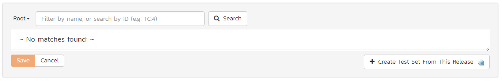
You can search for a test case by its ID if you know it (make sure to include the "TC" prefix):
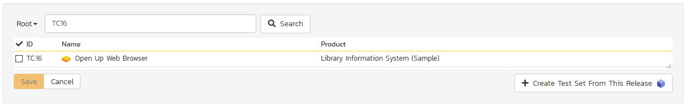
Otherwise, you can search for the test cases by choosing a folder from the dropdown and/or entering a partial name match:
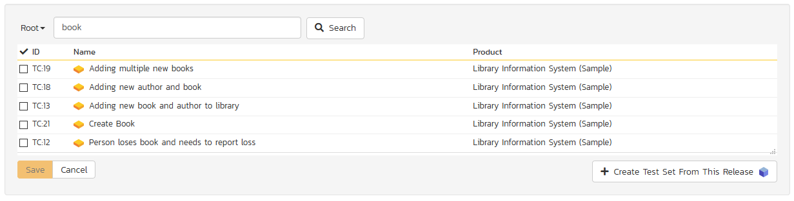
One you have found the desired test case(s), simply select their check boxes and click the 'Save' button to add them to the current release.
Finally, as a shortcut you can click the "Create Test Set from This Release" link to create a new test set from this release, that will include all of the test cases associated with this release. This is useful in regression testing when you have created a new release and want to be able to quickly assign a tester to ensure that all the functionality in the release works as expected.
Test Runs¶
This view displays the list of all the test runs executed against the release. Each test run is listed together with the date of execution, the name of the test case, the name of the tester, the release/version of the system that the test was executed against, the name of the test set (if applicable), the overall execution status for the test case in that run and a link to the actual test run details. In addition, you can choose to display any of the custom properties associated with the test run.
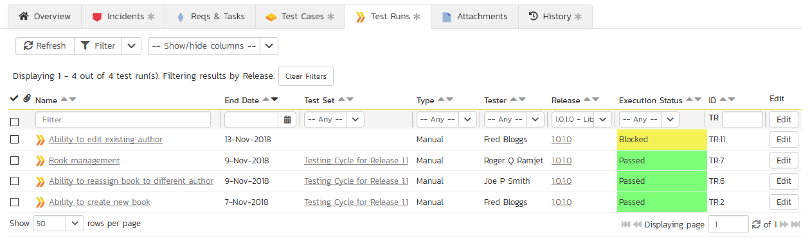
The "Show/hide columns" drop-down list allows you to change the fields that are displayed in the test run list as columns. To show a column that is not already displayed, simply select that column from the list of "Show..." column names and to hide an existing column, simply select that column from the list of "Hide..." column names. The displayed columns can be any standard field or custom property.
You can also filter the results by choosing items from the filter options displayed in the sub-header row of each field and clicking the "Filter" link. In addition, you can quickly sort the list by clicking on one of the directional arrow icons displayed in the header row of the appropriate field.
Attachments¶
Read about how the attachments tab works
Baselines¶
NOTE: Baselining is only available in SpiraTeam and SpiraPlan and this tab will be only then be visible if baselining has been turned on for a product.
This view displays the list of all baselines created for this release. If you have permissions for releases to create/modify/delete then you can perform the same actions for baselines.
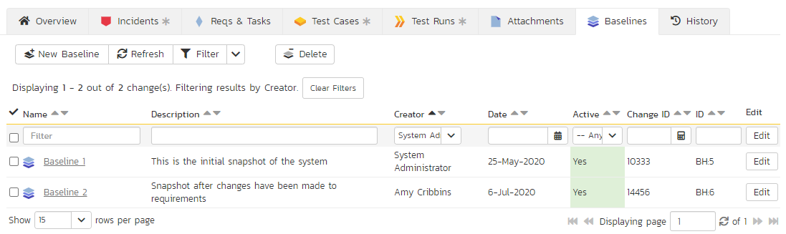
You can view the following information about a baseline here:
- Name (for product admins this links to the baseline details page)
- Description
- Creator
- Date (hover to see a tooltip of the date and time)
- Active (yes or no)
- Change ID that the baseline is linked to
- ID
To add a new baseline, click the New Baseline button. This will be disabled if you are not able to create releases. This will open up a small form. The name field is required, but the description field is optional. Enter the information and hit Add. NOTE: a baseline's description is plain text only.
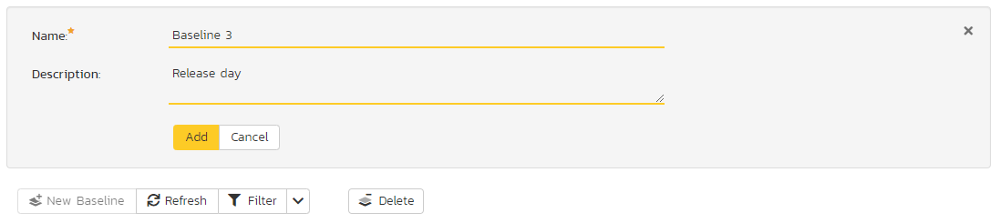
You can edit an existing baseline as long as you can edit the specific release the baseline belongs to. If you see Edit buttons on the table of baselines that means you can edit. You can edit a baselines name, its description, and whether it is active or not.
If you can delete releases you can delete any baseline on any release. To do so click select the baselines to delete (put a checkmark next to it) and click the Delete button.
To filter and sort the list of baselines, use the filter and sort controls at the top of the table.
History¶
Read about how the history tab works
Build Details¶
When you click on a build entry in the build list, you are taken to the build details page illustrated below:
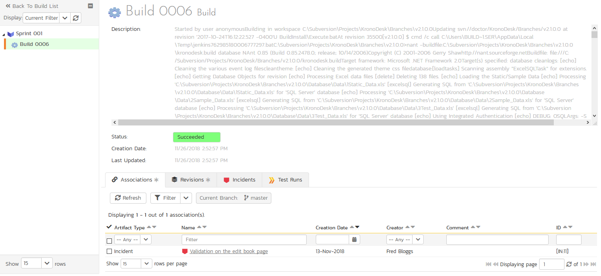
This page is made up of three areas:
- the navigation panel on the left
- summary / headline information about the build on the top right
- detailed information about the build on the bottom right
Navigation Panel¶
The navigation panel has:
- a link back to the build list for that release
- a list of the other builds that belong to the same release/sprint as this build
Header¶
The top part of the right panel shows:
- the build's ID (read only)
- its status (e.g. success or failure)
- the creation date
- the last updated date
Beneath the header bar are a number of collapsible sections, each of which show specific information about the build or links between the build and other parts of the system. This sections are: "Commits", "Associations", "Test Runs", "Incidents", and "Full Log". These are described below.
the details of the build including a detailed description of why it succeeded or failed. Since builds are populated from an external Continuous Integration server the build information will always be read-only inside the SpiraPlan user interface.
Commits¶
This section shows all source code commits included in the current build. The grid can be sorted and filtered by using the appropriate controls.
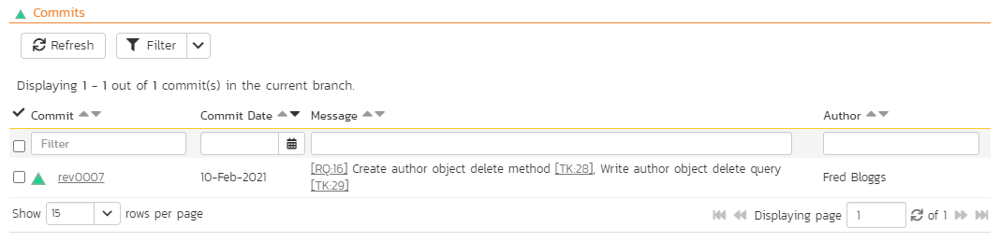
Associations¶
This section shows a list of SpiraPlan artifacts associated with the build. This is automatically populated by all artifacts listed as tokens in the commit messages of the commits included in the build.
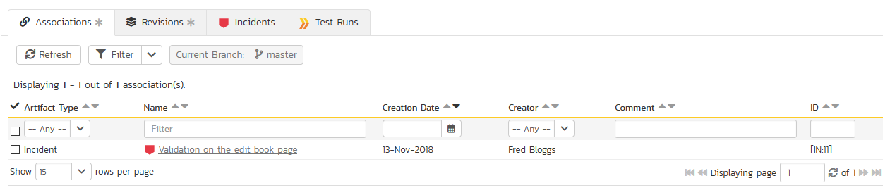
Incidents¶
This section shows the list of incidents that have been fixed in the current build. The grid can be sorted and filtered by using the appropriate controls. Note: if the build has no incidents the section will be hidden.
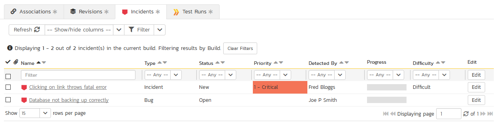
Test Runs¶
This section displays a list of all the tests that have been executed against the current build. The grid can be sorted and filtered by using the appropriate controls. Note: if the build has no test runs the section will be hidden.
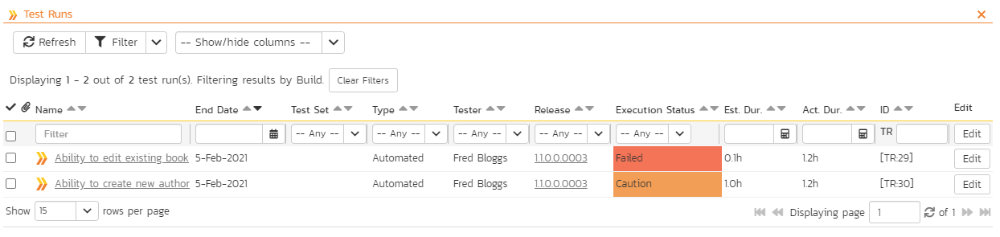
Full Log¶
This section displays the full console log readout that was returned from SpiraPlan by the build tool. This lets you view any detailed messages or errors. Note: this displays a maximum of two million characters (more than enough under normal circumstances) - longer logs are collapsed to show the first and last one million characters.
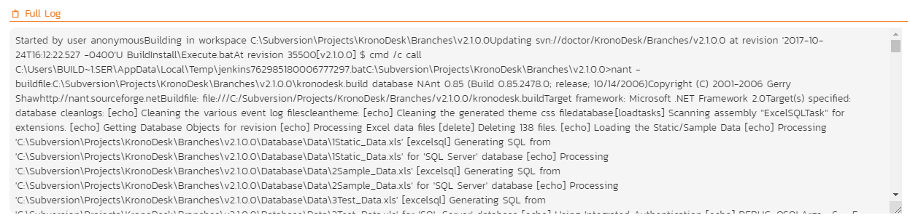